Day 9. 적합한 문제, 부적합한 문제
Phase 1 · 왜 뉴로모픽 컴퓨팅인가
이번 질문 뉴로모픽은 어떤 문제에 적합하고 어떤 문제에는 부적합한가?
왜 배우나 응용이 뉴로모픽에 맞고 MCU보다 시스템 전체로 나은지 device 재기 전에 가린다.
오늘의 장면 응용 + 부품별 에너지·횟수 → 여섯 질문 사다리 → 평균 전력 = 에너지 × 횟수 + 대기 → 첫 '아니오'와 µW 값
오늘 반드시 적합성은 여섯 질문을 위에서부터 묻는다. 평균 전력 = 에너지 × 횟수 + 대기 전력, '절감' 숫자는 기준선과 경계부터 묻는다.
나중에 봐도 됨 MCU·무선 데이터시트 출처 · Zhong 2022 숫자 · bio-interface 구간 · 영상
이후 쓰이는 곳 Day 10 기준선 종류 · Day 23–24 τ 정합 · Day 31–32 시스템 에너지 · Day 51–52 bio-interface
지난 학습 복습
지난 학습 단위(Day 8 · LIF neuron 회로, synapse device spec, peripheral circuits)의 핵심을 다른 예로 확인합니다. 고르는 즉시 맞았는지와 이유가 보입니다. 틀려도 아래 학습자료는 그대로 열려 있고, 틀린 문제에는 다시 볼 곳이 붙습니다.
사전 테스트 (선택)
사전 테스트 펼치기 · 배우기 전에 짐작해 보는 문제 (선택)
학습자료
앞에서 세 가지 조건을 모았습니다. 기존 컴퓨터가 특히 불리한 계산, 뇌의 원리가 비용을 줄이는 조건, device·회로가 갖춰야 할 조건입니다. 오늘은 그 조건들을 응용 쪽에서 읽습니다. 어떤 문제가 조건을 만족하고, 어떤 문제는 못 하는가.
오늘의 범위는 저전력 이온 device를 센서 옆(엣지)에 넣는 응용입니다. 데이터센터용 뉴로모픽 칩처럼 다른 기준으로 평가하는 분야는 다루지 않습니다. ★ 이 용도에서 먼저 나란히 놓을 기준선은 데이터센터의 큰 칩이 아니라, 센서 옆에 실제로 들어가는 작은 컴퓨터(MCU)입니다. 그 MCU에서는 과제에 따라 단순한 필터, 문턱 검출, 작은 신경망 같은 것이 돌아갑니다. 오늘은 그중 작은 신경망을 예로 전력을 셉니다.
오늘 내내 예제 하나를 씁니다. 가슴에 전극 두 개를 붙여 심장 신호를 읽고, 박동마다 정상/이상을 표시하는 심전도 패치입니다. 내 연구의 응용이라서가 아니라, 신호의 크기·빠르기가 잘 알려져 숫자를 따라가기 쉬워서 고른 예입니다. 같은 사다리와 같은 전력 계산을 땀 센서·압력 센서에도 그대로 씁니다.
학습 구간 1. 적합성을 가르는 질문 사다리
상황. 내 이온 소재로 땀 속 염분을 감시하는 피부 패치를 만들려 합니다. 지도교수가 "그게 뉴로모픽이 맞는 문제냐"고 묻습니다. Device를 재기 전에, 질문 몇 개로 "맞을 가능성"을 먼저 가릴 수 있을까요?
끝나면 할 수 있는 것. 내 응용을 여섯 질문의 사다리에 올려, 첫 "아니오"나 "모름"이 어디서 나오는지 말한다.
직관. "뉴로모픽은 어디에 좋은가"를 한 문장으로 답하면 틀립니다. ★ 적합성(suitability)은 한 문장이 아니라, 질문 여섯 개를 위에서부터 차례로 묻는 순서입니다. 이 사다리는 모든 뉴로모픽 연구의 필요조건이 아니라, 저전력 이온 device를 엣지 센서에 쓸지 가리는 실용 기준(heuristic)입니다. 앞 질문에서 "아니오"가 나오면 이 용도로는 보류하고, 설계를 바꿀 수 있는지(예: 변환 위치 옮기기, 입력을 희소하게 만들기)나 다른 장점(예: 생체 환경과의 호환)이 있는지를 따져 봅니다.
무엇을 볼지. 왼쪽 기둥을 따라 위에서부터 '예'로 내려갑니다. 카드마다 빨간 '아니오' 옆에, 그 질문에서 떨어지면 무엇이 문제인지 적었습니다. 마지막 주황 질문이 오늘 새로 묻는 질문입니다.

사다리를 읽기 전에: 다시 쓰는 말 다섯 묶음
펼치기 (낯선 것만 읽으면 됩니다)
- Weight, batch, 칩 안 메모리(on-chip memory). 신경망은 입력 숫자마다 weight(입력마다 붙은 '얼마나 중요하게 볼지'라는 숫자)를 곱해 더합니다.
- Weight가 칩 밖 메모리(DRAM)에 있으면, 계산할 때마다 그것을 칩 안의 곱셈기까지 가져와야 합니다. ★ 이 가져오기가 계산보다 비쌀 수 있고, 곱셈기가 weight를 기다리며 노는 상황을 memory wall이라 부릅니다.
- Batch는 이 비용을 나누는 요령입니다. 입력 64개를 모아 두었다가 weight를 한 번 가져와 64개에 연달아 쓰면, 가져오는 비용이 입력 하나당 64분의 1이 됩니다.
- 그런데 weight가 처음부터 칩 안 메모리에 다 들어가는 작은 모델이면 사정이 다릅니다. 가져올 먼 곳(칩 밖 DRAM)이 없으니 나눌 비용도 없습니다. 그래서 입력을 하나씩 처리해도(batch = 1) 손해가 없습니다(아래 그림 2).
- 사건(event)·희소(sparse)·대기 전력(standby power). 사건은 처리할 변화(예: 입력이 정해 둔 폭 이상 바뀜)이고, 희소하다는 것은 대부분의 시간이 조용하고 가끔만 사건이 온다는 뜻입니다. 대기 전력은 아무 일이 없어도 나가는 전력입니다. ★ 전력 = 대기 전력 + 일하는 몫이라서, 일을 아무리 줄여도 대기 전력은 바닥으로 남습니다.
- 아날로그·variation·noise. 아날로그는 값을 전압·conductance 같은 연속량 그대로 다루는 방식이고, 그 값은 device마다 조금씩 다르고(variation) 읽을 때마다 흔들립니다(noise).
- 시간상수 τ(time constant). Device 상태가 자극을 받은 뒤 원래대로 돌아오는 데 걸리는 시간의 척도입니다.
- ADC와 peripheral circuit. ADC(analog-to-digital converter)는 전압을 가장 가까운 단계의 숫자로 바꾸는 회로이고, peripheral circuit(주변회로)은 device 배열 바깥에서 전압을 만들고 전류를 숫자로 바꾸는 회로들입니다.
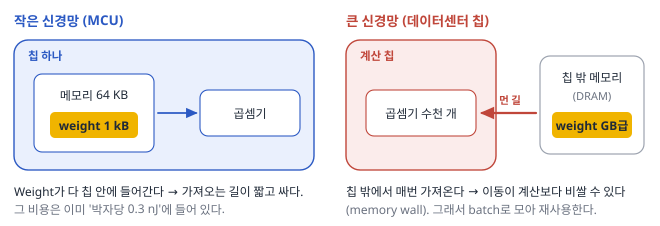
여섯 질문을 하나씩. 질문마다 무엇을 묻는지, 왜 묻는지, 그림 한 장으로 봅니다.
① 입력이 한 번에 하나씩, 실시간으로 오나? 사진 수백만 장 분류처럼 입력을 모아 둘 수 있는 일이면, 보통 컴퓨터가 batch로 weight를 재사용해 유리합니다. 심전도처럼 값이 1 ms마다 오고 수 초 안에 답해야 하는 일은 오래 모을 수 없습니다.
★ 여기서 '예'의 뜻은 "batch로 이득을 보기 어렵다"까지입니다. Weight가 칩 안에 다 들어가는 작은 모델이면 보통 컴퓨터도 하나씩 처리해서 손해가 없습니다. 그래서 데이터 이동이 정말 병목인지는 마지막 질문(MCU와의 비교)에서 숫자로 따집니다. Roadmap은 이 구분을 "마이크로와트로 동작하는 엣지 센서의 희소한 로컬 데이터 스트림"과 "대규모 클라우드 데이터센터"라는 양 끝으로 적습니다. Roadmap 2026, p.8103
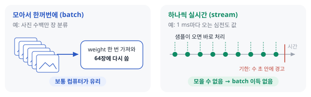
② 입력이 희소하고, 대기 전력을 작게 둘 수 있나? 사건이 드물면 '일하는 몫'의 전력은 거의 사라집니다. 그런데 아무 일이 없어도 나가는 대기 전력은 그대로 남습니다. ★ 그래서 '희소한가'와 '대기 전력이 작은가'를 함께 묻습니다. 입력이 늘 바쁘면(희소하지 않으면) 사건 때만 일하는 방식의 이득이 작습니다.
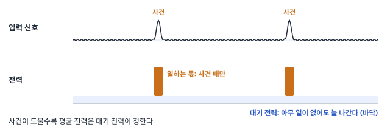
③ 조금 틀려도(근사·편차·잡음) 답이 같은 과제인가? 근사(approximation)를 견딘다는 것은 값이 1% 남짓 틀려도 최종 답이 같다는 뜻입니다.
- 견디는 예: 심전도 박동 분류. '이상' 점수가 정확히는 0.82인데 device가 0.81로 계산해도, 문턱 0.5를 넘는 것은 같으니 답('이상')이 그대로입니다.
- 못 견디는 예: 계좌 이자 계산. 100만 원을 1% 틀리면 1만 원이 틀리고, 그것은 틀린 답입니다.
Device로 계산하면 variation과 noise 때문에 오차가 생깁니다. 이 예에서는 그 크기를 1% 안팎으로 둡니다 가정. 실제 크기는 device·읽기 회로·보정 방법에 따라 크게 다릅니다. ★ 정확한 답이 필요한 과제면 그 오차를 없애려고 보정(calibration), 여러 번 읽어 평균 내기, 더 세밀한 ADC가 필요해지고, 이 비용이 아날로그로 아낀 에너지를 먹습니다. 같은 구성이면 software RC가 대개 더 정확하다는 Liang의 관찰도 같은 방향입니다. Liang 2024, p.201
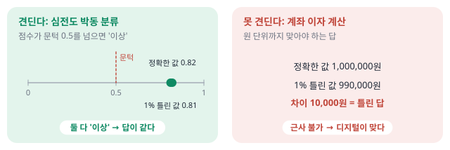
④ Device의 τ가 신호의 빠르기와 맞나? 심전도의 박동 간격은 약 1 s입니다. 아래 그림은 같은 박동 입력을 τ가 다른 세 device에 넣었을 때 상태가 어떻게 변하는지입니다.
- τ = 1 ms: 다음 박동이 오기 전에 앞 박동의 흔적이 다 사라집니다(망각).
- τ = 100 s: 모든 박동이 섞여 계속 쌓이기만 해서, 어느 박동이 언제 왔는지 구별이 안 됩니다.
- ★ τ가 박동 간격과 비슷하면(예: 0.5 s) 앞 한두 박동의 흔적이 상태에 남아, 시간 정보를 담습니다. Liang 2024, p.198
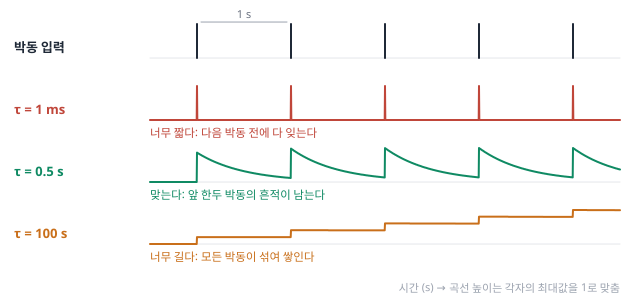
⑤ 다음 부품도 아날로그이거나, 변환이 드문가? Device의 출력(전류나 전압)을 받아 쓰는 다음 부품이 디지털 칩이면, 읽을 때마다 ADC로 숫자를 만들어야 합니다. 이런 peripheral circuit이 시스템 전력의 최대 70%까지 차지할 수 있습니다. Roadmap 2026, p.8130
★ 다음 부품도 아날로그로 받거나, 변환을 매 샘플이 아니라 사건 때만 하면 이 비용이 줄어듭니다. 아래 그림의 아랫줄이 그 설계입니다.
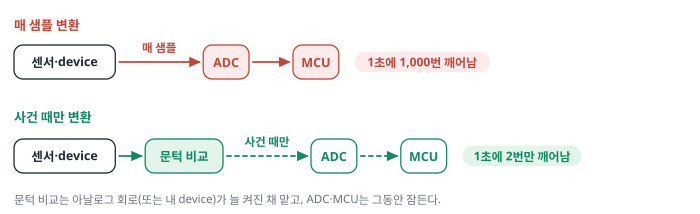
⑥ MCU + 작은 신경망보다 시스템 전체로 나은가? 오늘 새로 묻는 질문입니다.
- MCU(microcontroller, 마이크로컨트롤러)는 센서 옆에 붙이는 손톱만 한 칩으로, 계산기와 작은 메모리를 칩 하나에 담은 것입니다.
- 작은 신경망(small neural network)은 그 MCU에서 돌리는 작은 계산 프로그램입니다. '입력 숫자마다 weight를 곱해 더하고, 그 합을 다음 층으로 넘기기'를 몇 층 하고, weight가 수백–수천 개라 MCU의 칩 안 메모리에 다 들어갑니다. 예: 박동 하나의 숫자 200개를 넣으면 '정상'과 '이상' 점수 두 개가 나옵니다.
- ★ 뉴로모픽 device가 전류의 물리로 하려는 '곱해서 더하기'를, MCU는 숫자 계산으로 하나씩 차례로 합니다. 그래서 둘은 같은 자리를 두고 경쟁합니다.
Liang의 한 문장이 이 질문의 뼈대입니다. "디지털 RC보다 자원을 더 쓰는 physical reservoir computing은 의미가 없다." Liang 2024, p.202 Liang의 비교 대상은 디지털 RC이고, 그것을 MCU + 작은 신경망으로 넓힌 것은 이 자료의 해석입니다. 해석 이렇게 "device 대신 무엇을 썼다면 얼마나 됐을까"를 재는 비교 상대를 기준선(baseline)이라 부릅니다.
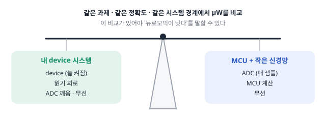
작은 예: 심전도 패치를 사다리에 올리기. 패치는 가슴에 붙인 전극 두 개로 심장의 전기 신호를 1 ms마다 하나씩 읽습니다. 이 예에서 raw signal(원시 신호)은 ADC가 숫자로 바꾸기만 하고 아무 처리도 하지 않은 샘플의 줄(raw samples)을 가리킵니다. 넓게는 숫자로 바꾸기 전 센서의 아날로그 전압 자체도 raw signal이라 부릅니다. 패치는 박동마다 정상/이상을 표시하고, 이상이 이어지면 수 초 안에 경고하며, 전지 하나로 며칠을 버텨야 합니다(교육용 가정).
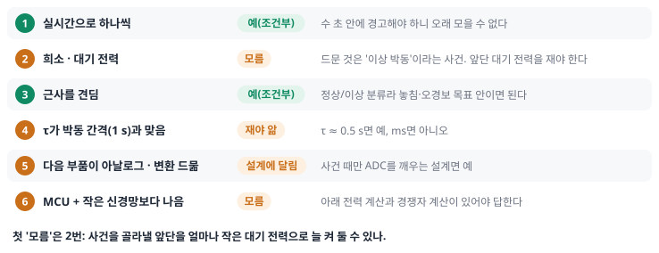
설명이 더 필요한 두 칸만 풀어 씁니다.
- '희소·대기 전력'이 '모름'인 이유. Raw signal은 1 ms마다 값이 있으니 그 자체로는 희소하지 않습니다. 드문 것은 '이상 박동'이라는 사건입니다. ★ 그래서 질문은 "사건을 골라내는 앞단을 얼마나 작은 대기 전력으로 늘 켜 둘 수 있나"로 바뀌고, 그 값은 아직 모릅니다.
- '다음 부품'이 '설계에 달림'인 이유. 패치 안에서 결과를 저장하거나 보내는 부품은 디지털 MCU라서 ADC가 필요합니다. '예'가 되려면 센서 바로 뒤에 아날로그 회로(또는 내 device)를 두고, 그것이 신호를 늘 지켜보다 이상 박동 같은 사건이 생길 때만 ADC와 MCU를 깨우게 설계해야 합니다. 그러면 ADC는 1초에 1,000번이 아니라 사건 수(예: 2번)만큼만 일합니다. 이 설계는 다음 구간에서 '설계 C'라는 이름으로 전력을 계산합니다.
★ 사다리는 "맞다/아니다"를 판정하는 도구라기보다, 다음에 무엇을 재거나 계산해야 하는지를 알려 주는 도구입니다. 이 예에서는 앞단의 대기 전력과 device의 τ가 다음에 잴 것입니다.
적용 조건. 이 사다리는 이해를 위한 순서이지 공식이 아닙니다. 그리고 질문마다 누가 답을 바꿀 수 있는지가 다릅니다.
- 회로 설계로 바꿀 수 있는 것: 대기 전력의 크기, 다음 부품을 아날로그로 둘지(예: 출력층까지 아날로그로).
- 과제가 정하는 것: 입력이 희소한지, 근사를 견디는지, 신호가 얼마나 빠른지.
- 재료로 맞추는 것: Device의 τ. 다만 맞춰야 할 목표(신호의 빠르기)는 과제가 줍니다.
Kudithipudi가 뉴로모픽 설계를 "흔히 크기·무게·전력 제약이 있는 응용"을 위한 것으로 소개한 것도 Kudithipudi 2025, p.801 응용 쪽에서 보면 같은 말입니다. '입력이 하나씩 실시간으로 오는가'와 '희소하고 대기 전력이 작은가'라는 첫 두 질문을 통과하는 응용을 가리킵니다.
내가 생각하는 응용 하나를 정해 사다리를 타 보세요(예: 피부에 붙인 압력 센서로 걸음 패턴 분류). 첫 다섯 질문 가운데 "아니오"나 "모름"이 처음 나오는 곳은 어디인가요? 그곳이 내 응용의 첫 병목입니다.
생각 정리 보기
걸음 패턴 압력 센서로 답해 보면 이렇습니다. 해석
- 실시간으로 하나씩? 예. 발걸음 신호는 시간 순서로 오고, 걸음이 끝나기 전에 판정해야 하니 오래 모을 수 없습니다.
- 희소·대기 전력? 발이 땅에 닿는 순간에만 압력이 크게 변하니 사건은 희소합니다(1초에 1–2번). 그런데 그 순간을 놓치지 않으려면 앞단이 늘 켜져 있어야 하고, 그 대기 전력이 얼마인지는 아직 모릅니다. ★ 첫 '모름'은 여기입니다.
- 근사? 예. '걷기/뛰기/계단' 같은 분류라 점수가 1% 틀려도 답은 대개 같습니다.
- τ 정합? 걸음 간격이 약 0.5–1 s이니 τ가 0.2–0.5 s쯤인 device면 맞습니다. 내 device의 τ를 재야 답이 납니다.
판단: 첫 병목은 '희소·대기 전력'이고, 다음에 잴 것은 앞단(압력 센서 + 내 device + 문턱 회로)이 늘 켜져 있을 때의 전류입니다. 그 전류 × 전압이 MCU가 잠든 전력(약 1 µW)보다 작으면 다음 질문으로 넘어갈 수 있습니다.
- 적합성은 한 문장이 아니라 여섯 질문의 순서다: 실시간으로 하나씩 → 희소·낮은 대기 전력 → 근사를 견딤 → τ가 신호와 맞음 → 다음 부품도 아날로그(또는 변환이 드묾) → MCU + 작은 신경망보다 나음.
- '실시간으로 하나씩'의 '예'는 "batch로 이득을 보기 어렵다"까지다. Weight가 칩 안에 들어가는 작은 모델이면 보통 컴퓨터도 하나씩 처리해 손해가 없으므로, 이동이 병목인지는 MCU와의 비교에서 따진다.
- 심전도 패치의 첫 "모름"은 '사건을 골라내는 앞단의 대기 전력'이고, τ는 device를 재야 답이 난다.
- 대기 전력과 다음 부품은 설계로 바꾸고, 희소성·근사 허용·신호 빠르기는 과제가 정하며, τ는 재료로 그 목표에 맞춘다.
학습 구간 2. Edge, in-sensor, always-on: 에너지 사슬의 어디를 끊나
상황. 심전도 패치는 전지 하나로 며칠을 버텨야 합니다. 내 이온 device를 넣으면 어느 부품의 전력이 줄까요? 논문의 "전력 99.9% 절감"은 어디를 센 숫자일까요?
왜 지금? Device 하나의 에너지(fJ 같은 숫자)만으로는 패치 전체 전력을 말할 수 없습니다. 센서 → 변환 → 처리 → 송신 가운데 어느 부품이 큰지부터 알아야 합니다.
어디에 쓰이나? 논문의 전력 숫자가 "어느 부품을 셌나"를 묻고, 내 device가 어느 부품의 일을 줄이는지 주장하는 데 씁니다.
끝나면 할 수 있는 것. 한 번의 에너지와 1초당 횟수로 평균 전력을 계산한다. 엣지 처리·in-sensor 처리·always-on이 각각 어느 부품을 줄이는지 숫자로 말한다.
이 구간은 네 걸음입니다. 센서 노드의 네 부품 → 평균 전력을 세는 규칙 → 세 가지 설계 비교 → 논문 숫자 읽기.
2-1. 센서 노드의 네 부품: 신호가 무엇으로 바뀌나
기초 1: 센서 노드, 엣지, 마이크로컨트롤러(MCU)
센서 노드와 엣지. 가슴의 심전도 패치, 공장 기계의 진동 센서, 밭의 토양 습도 센서처럼 데이터가 생기는 현장에 붙은 작은 장치를 센서 노드(sensor node)라고 합니다.
엣지(edge)는 '가장자리'라는 뜻입니다. 인터넷을 하나의 망으로 그리면, 한가운데에 데이터센터(클라우드, cloud)가 있고 데이터가 실제로 생기는 현장(몸, 공장, 밭)은 망의 바깥 가장자리에 있습니다. 그래서 "엣지에서 처리한다"는 데이터를 멀리 클라우드까지 보내지 않고, 그것이 생긴 자리 가까이(센서 노드 안)에서 처리한다는 뜻입니다.
★ 엣지 처리가 중요한 이유는 셋입니다. 보내는 일(무선 송신) 자체가 비싸고, 전지가 작고, 답이 빨리 필요하기 때문입니다.
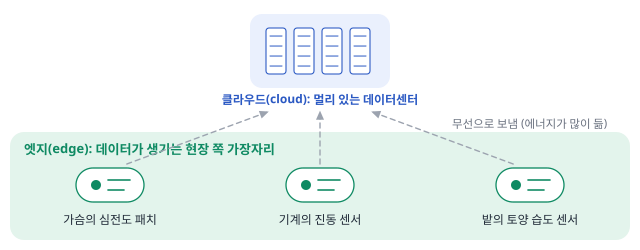
센서 노드 안의 네 부품. 신호는 이 순서로 지나갑니다.
- ① 센서 + 증폭기(amplifier): 피부 전위 같은 물리량을 전압으로 바꾸고, 너무 작은 전압을 키운다.
- ② ADC: 그 전압을 1초에 정해진 횟수만큼 읽어 숫자로 바꾼다. 읽은 숫자 하나가 샘플(sample)이다.
- ③ MCU: 숫자를 받아 프로그램대로 판정한다. 작은 신경망으로 답을 내는 일(inference)도 한다.
- ④ 무선 송신(wireless transmission): 결과를 전파로 보낸다.

무엇을 볼지. 그림 11은 샘플 하나가 네 부품을 차례로 지나며 무엇으로 바뀌는지입니다. 맨 아랫줄은 각 부품이 '한 번의 일'로 무엇을 하는지(늘 켜져 있음, 변환 1번, 샘플 1개 처리, 1 bit 송신)입니다. 아래에서 평균 전력을 셀 때, 이 '한 번'마다 에너지를 매깁니다.

부품마다 자세히. 그림의 번호를 따라 봅니다.
① 센서 + 증폭기. 심전도 패치에서는 피부에 닿은 두 전극 사이의 전압 차가 센서 출력이고, 크기는 1 mV 안팎입니다 미확인.
이것은 ADC가 그대로 읽기에 너무 작습니다. ADC의 한 눈금은 ADC가 구별할 수 있는 가장 작은 전압 차입니다. 예: 0–4.095 V를 4,096칸으로 나누는 12 bit ADC는 한 눈금이 1 mV입니다. 그러면 1 mV짜리 심전도 파형 전체가 한두 눈금 안에 들어가 모양을 읽을 수 없습니다.
★ 그래서 센서 바로 뒤에 증폭기(모양은 그대로 두고 크기만 키우는 회로)를 둬 크게 키웁니다. 예: 1,000배 키우면 1 mV가 1 V가 되어 파형이 약 1,000눈금에 걸쳐 그려집니다. 필요 없는 떨림을 거르는 필터(filter)도 함께 둡니다.
이 앞단은 신호를 놓치지 않으려고 늘 켜져 있습니다. 그래서 에너지를 '몇 번'이 아니라 '켜져 있는 동안의 전력 [W]'로 셉니다.
② ADC. 전압을 1초에 정해진 횟수만큼 읽어 숫자로 바꿉니다. 이 횟수가 sampling rate(샘플링률, 단위 S/s = 1초당 샘플 수)이고, 변환 1번이 곧 샘플 1개입니다.
심전도에서 의미 있는 떨림은 1초에 약 150번 오르내리는 것까지이고 미확인, 가장 빠른 오르내림 한 번에 점이 둘 넘게 찍혀야 모양을 놓치지 않습니다. ★ 그래서 오늘 예제는 1초에 1,000번, 즉 1 ms마다 한 번 읽습니다. 가정
12 bit ADC는 입력 범위를 2¹² = 4,096칸으로 나눕니다. 범위가 0–4.095 V면 한 칸이 1 mV이므로, 1.234 V는 숫자 1234가 됩니다.
③ MCU. 손톱만 한 칩 하나에 작은 계산기(processor), 작은 메모리, ADC, 통신 회로를 모두 넣은 범용 제어기입니다.
심전도 예라면 샘플이 올 때마다 최근 값 몇 개를 메모리에 저장하고, 떨림을 거르고, 문턱과 비교해 '사건(이상 박동 후보)'인지 판정합니다. 작은 신경망(weight 수백–수천 개로 '입력 × weight 더하기'를 몇 층 하는 프로그램)도 돌릴 수 있고, 그렇게 답을 내는 일을 inference라 합니다.
★ 할 일이 없을 때 MCU는 대부분의 회로를 끄고 잠듭니다(sleep). 그래서 MCU의 전력은 깨어 일할 때(mW 자릿수)와 잠들었을 때(µW 자릿수) 두 가지로 적습니다.
④ 무선 송신. 전파로는 숫자를 0과 1의 줄로 바꿔 하나씩 보냅니다. 0 또는 1 하나가 1 bit입니다.
- 12 bit ADC가 만든 숫자 하나(예: 1234)는 0과 1 열두 개(0100 1101 0010)입니다. 그래서 샘플 하나를 보내려면 12 bit를 보내야 합니다.
- Raw signal을 다 보내면 1초에 1,000 샘플 × 12 bit = 12,000 bit입니다.
- ★ 이상 박동 같은 사건만 보내면, 사건 하나에 16 bit(언제 12 bit + 무엇 4 bit, 오늘의 가정)라 훨씬 적습니다.
오늘의 모형은 무선 에너지가 보내는 bit 수(payload)에 비례한다고 둡니다 가정. 무선이 비싼 이유는 몇 m 떨어진 수신기까지 닿을 전파를 내야 하기 때문입니다. 실제 무선에는 주소·확인 신호 같은 덧붙는 bit, 무선 회로를 켜는 준비 시간, 재전송, 수신 대기 같은 고정 비용도 있어서, 보내는 bit가 적을 때는 이 고정 비용이 더 클 수 있습니다. 그래서 사건 메시지 16 bit의 이득은 이 모형보다 작게 나올 수 있습니다. 해석
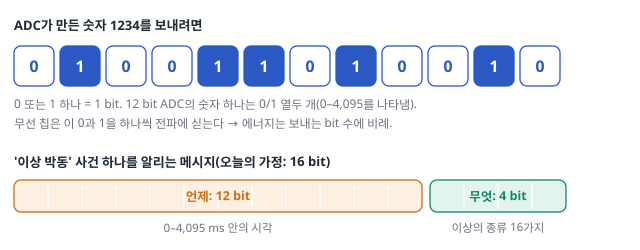
세 번째 부품인 MCU는 실물로 이렇게 생겼습니다.

뉴로모픽 device는 이 사슬의 어디에 들어가나. 내 연구에 가장 중요한 질문입니다. 지금의 사슬에서는 ADC와 MCU가 1초에 1,000번, 샘플마다 깨어나 일합니다. 그런데 심전도 샘플의 대부분은 '아무 일 없음'입니다. 이온 device가 들어갈 수 있는 자리는 두 곳입니다.
- A. 센서 뒤, ADC 앞(near-sensor 전처리). 증폭된 연속 신호를 device가 늘 지켜봅니다. Device의 상태가 최근 신호의 이력을 요약하고(예: 박동 간격이 갑자기 짧아짐), 그 상태가 문턱을 넘을 때만 ADC·MCU에 '깨어나라' 신호를 보냅니다.
- B. 센서 자체(in-sensor). 압력이나 이온 농도 같은 자극이 곧바로 device 속 이온의 분포를 바꾸는 소재라면, 센서가 신호를 받는 순간 이미 그 이력을 상태로 요약합니다. 센서와 전처리기가 한 몸입니다.
★ 어느 자리든 이득은 같은 곳에서 나옵니다. ADC·MCU가 매 샘플(1초 1,000번)이 아니라 사건 때(예: 1초 2번)만 일하게 됩니다. 얼마나 줄어드는지는 아래 세 설계 비교에서 계산합니다.
대가도 있습니다. ★ Device와 그것을 읽는 회로는 늘 켜져 있어야 하므로, 그 대기 전력이 MCU가 잠든 전력(µW 자릿수)보다 작아야 이득이 남습니다. 디지털 뉴로모픽 칩이라면 ADC 뒤의 MCU 자리에 들어가겠지만, 이온 device는 아날로그라 A나 B가 자연스럽습니다. 해석 Singh 2026도 기존 엣지 하드웨어가 센서 → ADC → 메모리 → 프로세서로 데이터를 옮기는 데 에너지와 시간을 낭비하고, 그래서 센서 곁(near-sensor)이나 센서 안(in-sensor)에서 처리하는 방식이 나왔다고 씁니다. Singh 2026, p.1
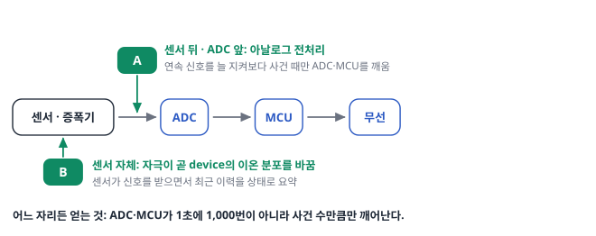
2-2. 한 번의 에너지 × 1초당 횟수: 평균 전력을 세는 법
왜 필요한가. 전지로 며칠을 버텨야 하는 패치에서 묻는 것은 "평균적으로 1초에 몇 J을 쓰나", 즉 평균 전력(average power)입니다. 그런데 부품의 spec(사양: 제조사가 적어 둔 성능 숫자)은 "변환 한 번에 몇 nJ"처럼 한 번의 에너지로 주어지거나, "깨어 있을 때 몇 mW, 잠들었을 때 몇 µW"처럼 상태별 전력으로 주어집니다. 둘을 이어 주는 규칙 하나만 있으면 됩니다.
규칙. ★ 부품의 '한 번의 에너지'에 1초에 하는 횟수를 곱하면 평균 전력이 되고, 여기에 횟수와 상관없이 늘 나가는 대기 전력을 더합니다. 단위로 쓰면 [J/번] × [번/s] = [J/s] = [W]입니다. 예: 1,000번/s × 1 nJ = 1,000 nJ/s = 1 µW.
박자와 duty cycle. MCU는 내부 시계(clock)가 똑딱일 때마다 한 걸음씩 일합니다. 이 똑딱 하나를 이 자료에서는 박자(clock cycle)라 부르고, 8 MHz면 1초에 800만 박자입니다. 그래서 '샘플 하나 처리에 몇 박자'를 알면 깨어 있는 시간과 에너지를 셀 수 있습니다. 1초 가운데 깨어 일하는 시간의 비율은 duty cycle(듀티 사이클)이라 합니다.
무엇을 볼지. 그림 14는 MCU 하나가 5 ms 동안 하는 일입니다. 샘플이 1 ms마다 오면 MCU는 잠깐 깨어나(솟은 칸) 처리하고 다시 잠듭니다(바닥). ★ 솟은 칸 하나의 넓이가 한 번의 에너지, 1초에 솟는 횟수가 횟수, 바닥의 높이가 대기 전력입니다.

MCU 하나의 평균 전력 계산하기. 숫자는 저전력 MCU 하나(TI MSP430FR5969)의 데이터시트 값입니다. 확인 TI MSP430FR5969 데이터시트 칩마다 값은 다릅니다.
먼저 데이터시트 숫자 읽기.
- 동작 전류 '100 µA/MHz': 시계를 1 MHz(1초에 100만 박자)로 돌릴 때 전류가 100 µA 든다는 뜻입니다. 시계를 8 MHz로 돌리면 8배인 800 µA = 0.8 mA입니다.
- 잠든 상태(LPM3) 전류: 0.4 µA.
- 전원 전압: 3 V로 둡니다.
전류를 전력으로. 전력 = 전류 × 전압입니다.
| 상태 | 전류 | × 전압 | = 전력 |
|---|---|---|---|
| 깨어 있을 때 (8 MHz) | 0.8 mA | 3 V | 2.4 mW |
| 잠들었을 때 | 0.4 µA | 3 V | 1.2 µW |
박자 하나의 에너지. 깨어 있으면 1초에 2.4 mJ을 쓰고(2.4 mW = 2.4 mJ/s), 그 1초에 박자가 800만 번 있습니다. ★ 그래서 박자 하나 = 2.4 mJ ÷ 8,000,000 = 0.3 nJ입니다. 계산 시계를 다른 빠르기로 돌려도 이 값은 거의 같습니다. 전류와 박자 수가 같은 비율로 변하기 때문입니다.
이제 그림 14를 따라 네 걸음.
① 한 번의 에너지. 샘플 하나를 거르고 문턱과 비교하는 데 약 67박자가 든다고 둡니다 가정. 0.3 nJ × 67 ≈ 20 nJ입니다. (시간으로 보면 67박자 ÷ 8 MHz ≈ 8.3 µs 동안 2.4 mW로 일한 것과 같습니다.)
② 일하는 몫. 샘플이 1초에 1,000번 오므로 20 nJ × 1,000/s = 20,000 nJ/s = 20 µW.
③ Duty cycle. 1초 가운데 깨어 있는 시간은 8.3 µs × 1,000 = 8.3 ms, 즉 약 0.83%입니다. 나머지 약 99.2%는 잠들어 있습니다.
④ 대기 몫과 합계. 잠든 동안의 몫은 1.2 µW × 99.2% ≈ 1.2 µW. ★ 평균 전력 ≈ 20 + 1.2 ≈ 21 µW. 일하는 몫은 횟수에 비례하고, 대기 몫은 횟수와 거의 무관하게 바닥으로 남습니다.
대기 전력과 always-on. 잠든 MCU처럼 아무 일이 없어도 나가는 전력이 대기 전력(standby power)입니다. 그리고 센서·증폭기처럼 신호를 놓치지 않으려고 잠들지 않고 늘 켜 두는 동작을 always-on이라 부릅니다. ★ Always-on 부분의 전력은 횟수와 상관없이 1초 내내 나가므로, '한 번의 에너지 × 횟수'가 아니라 그 전력 [W]을 그대로 더합니다.
네 부품의 '한 번의 에너지'. 같은 방식으로 다른 부품의 자릿수를 잡습니다. 아래 계산에는 오른쪽 열의 둥근 값을 씁니다.
| 부품 | 한 번의 일 | 근거 (데이터시트·실측으로 계산) | 계산에 쓰는 값 |
|---|---|---|---|
| ADC | 변환 1번 | 145 µA × 3 V × 약 3.9 µs ≈ 1.7 nJ | 1 nJ |
| MCU | 샘플 1개 처리(거르기·문턱 비교) | 0.3 nJ/박자 × 약 67박자 ≈ 20 nJ | 20 nJ |
| 무선 | 1 bit 송신 | 칩이 전파를 내는 순간만: 약 16 nJ · 준비와 연결 유지까지 넣은 실측: 약 400 nJ | 50 nJ |
| 센서·증폭기 | 늘 켜짐 | 세 설계에 똑같이 들어가므로 비교에서는 뺌 | – |
근거를 자세히 (데이터시트·논문 값)
- ADC. 같은 MCU 안의 12 bit ADC는 3 V에서 동작 전류 145 µA(전형값)이고, 변환 한 번에 내부 시계 14박자(약 2.9 µs)와 입력 전압을 붙잡아 두는 시간 약 1 µs가 듭니다. 확인 데이터시트 Table 5-22·5-23 0.145 mA × 3 V × 3.9 µs ≈ 1.7 nJ. 계산
- 무선, 전파를 내는 순간만. Nordic nRF52832(저전력 블루투스 칩)는 3 V에서 송신 중 5.3 mA를 쓰고 1초에 100만 bit를 전파에 싣습니다. 확인 제품 안내서 v2.4 5.3 mA × 3 V ÷ 1,000,000 bit/s ≈ 16 nJ/bit. 계산
- 무선, 실측. 저전력 무선 칩을 실제로 잰 연구는 IEEE 802.15.4(ZigBee 계열)가 에너지 1 J로 최대 약 300 KB를 보냈다고 보고합니다. 확인 Siekkinen et al. 2012, IEEE WCNCW 1 J ÷ (300,000 × 8 bit) ≈ 400 nJ/bit. 계산 준비 시간·덧붙는 bit·연결 유지까지 들어가 칩 값보다 큽니다.
- 그래서 무선은 둘 사이의 50 nJ/bit로 둡니다. 가정
평균 전력의 식. 위 규칙을 기호로 한 줄에 적으면 이렇습니다.
\[P_{\text{avg}} \approx f_s E_{ADC} + f_s E_{MCU} + R\,E_{radio} + P_{\text{standby}}\]
- \(f_s\): sampling rate [번/s]. \(E_{ADC}\), \(E_{MCU}\): 변환 1번, 샘플 1개 처리의 에너지 [J].
- \(R\): 1초에 보내는 bit 수 [bit/s]. \(E_{radio}\): 1 bit 송신의 에너지 [J/bit].
- \(P_{\text{standby}}\): 늘 켜진 부분과 잠든 부품의 전력 [W].
앞의 세 항은 모두 "1초당 횟수 × 한 번의 에너지"이고, 마지막 항만 횟수와 무관합니다.
2-3. 세 가지 설계 비교: 사슬의 어디를 끊나
엣지 컴퓨팅과 in-sensor computing. 처리를 어디서 하느냐에 따라 두 말이 쓰입니다.
- 엣지 컴퓨팅(edge computing): 데이터를 보내기 전에 노드 안(주로 MCU)에서 처리해 무선 송신을 줄입니다.
- Near-sensor computing: 센서 바로 옆의 회로나 device가 ADC 앞에서 처리해 ADC·MCU가 하는 일을 줄입니다.
- In-sensor computing: 센서 자체가 감지하면서 처리까지 합니다(센서와 처리기가 한 몸). 줄이는 부품은 near-sensor와 같습니다.
어느 부품이 전력을 지배하느냐에 따라 끊을 곳이 다릅니다.
세 가지 설계. 같은 심전도 패치(1,000 S/s × 12 bit, 이상 박동 사건은 1초에 2번, 사건 하나에 16 bit라고 가정)를 세 가지로 만듭니다.
- A. Raw signal을 전부 보냄(처리는 클라우드에서).
- B. 엣지 처리: MCU가 매 샘플을 처리해 사건만 보냄.
- C. Near-sensor 전처리: 센서 바로 뒤의 아날로그 전처리 device가 연속 전압을 always-on으로 지켜보다가, 문턱을 넘는 사건이 생길 때만 ADC·MCU를 깨움(그 밖의 시간에 ADC·MCU는 잠듦).
A에서 ADC·MCU·무선 가운데 어느 부품이 평균 전력의 대부분을 차지할까요? 한 번의 에너지(ADC 1 nJ, MCU 20 nJ, 무선 1 bit 50 nJ)와 1초당 횟수만으로 짐작해 보세요.
무엇을 볼지. 그림 15(b)의 세 막대가 A·B·C의 평균 전력입니다. 가로축은 로그 눈금(한 칸이 10배: 1 µW → 10 µW → 100 µW → 1 mW)이라, 막대 길이 차이 한 칸이 10배 차이입니다.

세 설계의 평균 전력 계산하기. 규칙은 하나입니다. 부품마다 (1초에 하는 횟수) × (한 번의 에너지)를 구해 더합니다.
★ 헷갈리기 쉬운 것은 무선입니다. 무선의 '한 번'은 1 bit라서, 1초에 보내는 bit 수를 먼저 셉니다.
- A는 raw signal을 다 보냅니다: 1초에 1,000 샘플 × 샘플당 12 bit = 12,000 bit/s.
- B와 C는 사건만 보냅니다: 1초에 사건 2개 × 사건당 16 bit = 32 bit/s.
| 설계 | ADC (1 nJ/번) | MCU (20 nJ/번) | 무선 (50 nJ/bit) | 늘 켜진 전처리 | 합계 |
|---|---|---|---|---|---|
| A | 1,000번/s → 1 µW | 1,000번/s → 20 µW | 12,000 bit/s → 600 µW | – | 621 µW |
| B | 1,000번/s → 1 µW | 1,000번/s → 20 µW | 32 bit/s → 1.6 µW | – | 약 23 µW |
| C | 2번/s → 0.002 µW | 2번/s → 0.04 µW | 32 bit/s → 1.6 µW | 1 µW 가정 | 약 3 µW |
한 칸을 풀어 보면, A의 무선 = 12,000 bit/s × 50 nJ/bit = 600,000 nJ/s = 600 µW입니다(1,000 nJ/s = 1 µW). C의 합계는 0.002 + 0.04 + 1.6 + 1 ≈ 2.6 µW라 반올림해 3 µW입니다. 계산
★ A → B에서는 무선이 600 µW → 1.6 µW로 줄고(보내는 bit 수가 375분의 1), B → C에서는 매 샘플의 ADC·MCU(21 µW)가 사건 때만 일하게 줄어듭니다.
모형이 넣지 않은 것. 무선을 실측 쪽(약 400 nJ/bit)으로 잡으면 A의 송신 몫은 더 커집니다. 그리고 이 모형은 센서·증폭기 전력(세 설계에서 같다고 봄)과, 부품이 잠든 동안의 대기 전력을 뺐습니다. 뒤의 것을 넣어 봅니다. MCU가 잠든 동안 쓰는 1.2 µW(데이터시트 값)를 B와 C에 더하면 B ≈ 24 µW, C ≈ 4 µW가 되어, 차이가 약 9배에서 약 6배로 줄어듭니다. 계산 일을 줄일수록 대기 전력이 바닥을 정한다는 교훈이 여기서도 나옵니다.
핵심. ★ 송신이 지배하면 엣지 처리가, 매 샘플의 ADC·MCU가 지배하면 in-sensor 전처리가 효과를 냅니다. 일하는 몫을 줄일수록 남는 것은 always-on 부분과 잠든 부품의 대기 전력입니다.
Always-on을 숫자로. 사건이 아주 드문 노드라면 평균 전력은 거의 대기 전력입니다. 대기 1 µW인 노드에 사건이 하루 100번 오고 사건마다 10 µJ을 쓴다면, 사건 몫은 100 × 10 µJ ÷ 86,400 s ≈ 0.012 µW로 대기 1 µW의 약 1%입니다. 계산 ★ 이런 노드에서는 사건당 에너지보다 대기 전력을 줄이는 것이 평균 전력을 정합니다.
2-4. 폴더 논문의 숫자를 사슬의 눈으로 읽기
지금까지는 내가 정한 가정값으로 계산했습니다. 논문이 보고한 전력 숫자도 같은 눈으로 읽으면, 어느 부품을 셌고 무엇과 비교했는지 물을 수 있습니다.
폴더의 예: Zhong 2022(Nat. Electron.).
- 무엇을 만들었나. 휘발성 memristor(volatile memristor: 저항이 지나온 전압·전류 이력에 따라 바뀌었다가 시간이 지나면 저절로 돌아오는 2단자 device) 24개를 reservoir로, 비휘발 memristor 배열을 readout으로 쓴 완전 아날로그 RC 시스템입니다.
- 무엇을 했나. 심전도 부정맥 검출 96.6%(같은 알고리즘을 숫자로 돌린 디지털 RC는 98.2%), 3축 가속도 제스처 분류 97.9%. Zhong 2022, p.677–678
- ★ 무엇을 주장하나. 제스처 과제에서 디지털 RC보다 정확도는 평균 1.1% 낮지만, 전력은 99.9% 넘게 줄었다(제스처당 29,400 → 22 µW). Zhong 2022, p.678
- 왜 줄었다고 하나. 저자들이 든 이유는 둘입니다. 신호를 끝까지 아날로그로 전달해 ADC 비용을 없앴고, 큰 recurrent neural network(순환 신경망: 자기 출력을 다음 입력으로 다시 받아 과거를 기억하는 신경망)를 device 몇 개로 대체했다. Zhong 2022, p.679
- ★ 주의. 이 전력은 측정값이 아니라 저자들의 추정값이고, 본문에는 두 숫자에 어떤 부품이 들어갔는지(디지털 RC를 어떤 칩에서 돌렸는지 등)가 나오지 않습니다.

이 숫자를 읽을 때 볼 세 가지.
- 기준선의 종류. 98.2%와 99.0%는 "완전 디지털 RC"(같은 알고리즘을 숫자 계산으로 돌린 것)이지 "MCU + 작은 신경망"이 아닙니다. "device를 빼고 raw 입력 + readout"이라는 기준선도 본문에 없습니다. 해석
- 시스템 경계(system boundary: 전력을 셀 때 어느 부품까지 넣었는지의 테두리). 앞의 세 설계 계산도 센서·증폭기와 대기 전력을 경계 밖에 두었습니다. ★ 같은 논문의 시스템 구성에는 전원 모듈과 MCU가 들어 있습니다(MCU가 제어 신호와 데이터 전송을 맡음). Zhong 2022, p.674 즉 "완전 아날로그 RC"에도 디지털 제어기가 옆에 있고, 22 µW가 그것을 포함하는지는 본문으로 알 수 없습니다.
- 과제의 성격. 심전도와 제스처는 모두 실시간 시계열, batch 1, 분류(근사 허용)입니다. 사다리의 '실시간으로 하나씩'·'근사를 견딤'·'τ가 맞음'을 통과하는 과제를 골랐기 때문에 이득이 난 것이고, 다른 과제에서도 같은 이득이 난다는 근거는 이 논문에 없습니다. 해석
심화 · always-on의 다른 길: 전원 없이 늘 켜 두기(Kim 2026)
Always-on 부분은 대기 전력이 평균 전력을 정한다고 했습니다. Kim 2026(Nat. Sensors)은 센서와 memristor만으로 "디지털 회로나 외부 전원 없이" 여러 감각 입력의 spike encoding(세기를 짧은 전압 펄스의 시점으로 바꾸기)과 unsupervised learning(정답 없이 함께 오는 입력의 규칙성만으로 연결 세기를 바꾸는 학습)을 하는 self-powered 아날로그 시스템을 주장합니다. Kim 2026, p.535
"외부 전원 없이"는 환경 자극이 정보원이자 에너지원이 된다는 뜻입니다(예: 광전지·압전 센서가 만든 전압을 그대로 device에 건다). Kim 2026, p.536–538 ★ 그러니 이 방식은 입력이 있을 때만 동작하고, learning rule도 device 근처의 신호만으로 돌아가야 합니다. 이것이 '희소하고 대기 전력이 작은가'라는 질문에 대한 극단적인 답이라는 것은 해석입니다.
- Zhong 2022: 부정맥 96.6% vs 디지털 RC 98.2% Zhong 2022, p.677; 제스처 평균 손실 1.1%, 전력 99.9% 절감(29,400 → 22 µW/제스처, 저자 추정) Zhong 2022, p.678, Fig. 5g.
- 세 설계 계산의 가정값: ADC 1 nJ/변환(데이터시트 예 약 1.7 nJ), MCU 20 nJ/샘플(0.3 nJ/박자 × 약 67박자), 무선 50 nJ/bit(칩 송신 중 약 16 nJ/bit, 실측 약 400 nJ/bit). 계산
- Roadmap의 엣지 BIC(생체 모방 컴퓨팅) 예: "Tianmouc" 비전 칩이 최대 10,000 fps, dynamic range 130 dB(한 장면에 함께 담는 가장 밝은 빛과 가장 어두운 빛의 비, 약 300만 배 계산), 내보내는 데이터 양 90% 절감. Roadmap 2026, p.8136 이것은 비전 칩이지 이온 device가 아니다.
- Edge / 센서 노드 / MCU
- 데이터가 생기는 현장 쪽 가장자리 / 그 자리의 작은 장치 / 그 안의 범용 제어 칩. 센서 노드와 엣지
- Raw signal (원시 신호)
- 센서 전압을 숫자로 바꾸기만 하고 아무 처리도 하지 않은 값의 줄.
- In-sensor computing
- 센서 자체 또는 바로 옆에서 처리를 끝내 ADC·메모리·processor로 가는 데이터를 줄이는 방식 Singh 2026, p.1.
- Always-on
- 잠들지 않고 늘 켜 둔 채 입력을 감시하다 사건이 오면 반응. 그 전력은 횟수와 무관하게 나가므로, 사건이 드물면 평균 전력을 정한다. 평균 전력을 세는 법
- Duty cycle
- 전체 시간 가운데 깨어 일하는 시간의 비율. 1 ms마다 8.3 µs 깨는 MCU는 약 0.83%. MCU 계산
- Baseline (기준선)
- "device가 없었다면 얼마나 잘 됐을까"를 재는 비교 대상. 같은 알고리즘의 디지털 구현, raw 입력 + 같은 readout, MCU + 작은 신경망 등 여러 종류가 있다.
내 device가 센서이면서 전처리기라면 사슬은 어떻게 달라질까요? Piezoionic이나 electrostatic sensor처럼 압력 같은 자극이 곧 device 속 이온 분포를 바꾸는 경우를 떠올려 보세요. 세 가지를 생각합니다. (1) ADC는 1초에 몇 번 깨어나야 하나? (2) Device 출력을 읽으려면 어떤 회로가 필요한가? (3) 그 회로가 늘 켜져 있을 때의 대기 전력은?
생각 정리 보기
먼저, '이온 분포가 바뀐다'가 왜 중요한가. 보통 센서는 '지금 값'만 냅니다. 압력을 빼면 출력도 바로 0으로 돌아가고, 과거는 뒤의 ADC·MCU가 숫자로 저장해 기억합니다. 반면 압력으로 이온이 한쪽으로 몰리는 소재는, 압력을 뺀 뒤에도 이온이 제자리로 돌아가는 데 τ만큼 시간이 걸립니다. 그래서 출력에 최근 자극의 이력이 섞여 남습니다.
예: 0.2 s 간격으로 두 번 누르면, 앞의 이온이 아직 덜 돌아온 상태에서 두 번째 자극이 더해져 두 번째 출력이 첫 번째보다 커집니다. [해석, 예시] ★ 센서가 '최근 얼마나 자주, 세게 눌렸나'를 스스로 요약하는 셈이라, 그 요약을 얻으려고 매 샘플 ADC로 숫자를 만들어 MCU가 계산할 필요가 줄어듭니다.
(1) ADC 깨움. Device 출력(이력의 요약)이 문턱을 넘을 때만 ADC를 깨우면, 사건이 1초에 2번일 때 ADC도 1초에 2번입니다. 매 샘플 방식이면 1,000번입니다.
(2) 읽기 회로.
- 출력이 전압(mV 자릿수)이면: 작은 전압을 키우는 증폭기 + 문턱 비교기(comparator: 두 전압을 비교해 넘으면 1을 내는 회로).
- 출력이 전류(nA 자릿수)이면: 먼저 전류를 전압으로 바꾸는 TIA(transimpedance amplifier)가 필요하고, 그 뒤에 비교기.
- 내 device가 이온 전류를 내는지, 열린 회로 전압을 내는지부터 확인합니다.
(3) 대기 전력. 위 회로들은 늘 켜져 있어야 합니다. ★ 그 합이 MCU가 잠든 전력(약 1.2 µW)보다 작아야 이 설계의 이득이 남습니다. 저전력 비교기는 1 µA보다 훨씬 작은 전류로 도는 제품이 있지만 미확인, 증폭기까지 합친 값은 내 device 신호의 크기에 달려 있어 지금은 모르는 항목입니다.
판단. 이 세 숫자를 채우면, 앞의 세 설계 비교의 C(near-sensor 전처리) 줄에 내 device를 넣어 평균 전력을 계산할 수 있습니다.
- 센서 노드 = 센서 → ADC → MCU → 무선. 엣지 처리는 송신을, in-sensor 전처리는 ADC·MCU의 일을 줄인다. 어느 부품이 지배하느냐가 효과를 정한다(세 설계: 621 → 23 → 3 µW, 모형 계산).
- 한 번의 일의 에너지 자릿수: ADC 변환 약 1–2 nJ, MCU 박자당 약 0.3 nJ, 무선 1 bit 약 16 nJ(송신 순간)–400 nJ(실측). 평균 전력 = Σ(1초당 횟수 × 한 번의 에너지) + 늘 나가는 대기·always-on 전력.
- 이온 device의 자리는 센서 뒤·ADC 앞(near-sensor) 또는 센서 자체(in-sensor)다. 이득은 ADC·MCU가 사건 때만 일하는 데서 나오고, 대가는 늘 켜진 device·읽기 회로의 대기 전력이다.
- Zhong 2022는 디지털 RC 대비 1.1% 손실, 전력 99.9% 절감을 주장한다 Zhong 2022, p.678–679. 기준선이 디지털 RC이고, 시스템에 MCU가 있으며, 전력은 저자의 추정값이다.
학습 구간 3. 센서 옆의 디지털 기준선: 저전력 MCU + 작은 신경망
상황. 어떤 뉴로모픽 논문 서론이 "GPU보다 10⁶배 효율적"이라고 씁니다. 그런데 센서 패치 안에는 GPU가 없습니다. 이 비교는 정말 같은 저울에 올릴 수 있을까요?
왜 지금? 앞에서 센서 노드의 전력을 세는 법을 익혔습니다. 이제 그 자리에 이미 들어 있는 경쟁자의 전력을 같은 방법으로 셉니다.
어디에 쓰이나? 논문의 "에너지 절감"이 어떤 기준선과 비교한 것인지 읽고, 내 연구 동기의 비교 대상을 정하는 데 씁니다.
끝나면 할 수 있는 것. 비교 대상이 GPU가 아니라 MCU + 작은 신경망임을 설명한다. 항목별로 누가 유리한지 조건을 붙여 말하고, 공정한 비교의 형식을 적는다.
직관. 뉴로모픽 논문의 서론은 GPU(graphics processing unit: 곱셈기 수천 개를 한꺼번에 돌리는 데이터센터용 칩)의 수백 W와 비교하곤 합니다. 하지만 센서 노드에 GPU를 넣는 사람은 없습니다. 그 자리에 실제로 들어가는 것은 MCU이고, 요즘 MCU는 작은 신경망을 돌립니다(이 분야를 TinyML이라 부릅니다 Warden & Situnayake, TinyML, 2020).
★ 그러니 물어야 할 것은 "GPU보다 몇 배"가 아니라, "같은 과제를 MCU + 작은 신경망으로 하면 전력·정확도·비용이 얼마인가"입니다.
Liang의 "디지털 RC보다 자원을 더 쓰는 physical reservoir computing은 의미가 없다" Liang 2024, p.202는 디지털 RC와의 비교를 요구하는 문장이고, 이 자료는 그 요구를 엣지에 실제로 들어가는 MCU + 작은 신경망까지 넓혀 읽습니다. 해석 Kudithipudi가 보통 컴퓨터를 "가장 작은 마이크로컨트롤러부터 서버급 processor까지" 한 척도로 재듯 뉴로모픽의 규모도 그렇게 재자고 한 것 Kudithipudi 2025, p.802도, 뉴로모픽을 MCU급 장치와 같은 저울에 올릴 수 있다는 뜻으로 읽을 수 있습니다. 해석
MCU에서 작은 신경망이 도는 장면.
먼저 '작은 신경망'이 무엇인지. 신경망(neural network)은 "입력 숫자마다 weight를 곱해 더하고, 그 합을 다음 층으로 넘기기"를 몇 층 되풀이하는 계산 규칙입니다. 이름에 '신경'이 붙었지만, MCU에서는 그냥 곱셈과 덧셈을 하는 프로그램입니다.
- '작은'은 weight가 수백–수천 개라 MCU의 칩 안 메모리에 다 들어간다는 뜻입니다. 데이터센터의 큰 신경망은 수십억 개입니다.
- 예: 박동 하나의 숫자 200개를 넣고, weight 1,000개로 계산해 '정상/이상' 점수를 내는 분류기.
- ★ 뉴로모픽 device 배열은 이 '곱해서 더하기'를 전류의 물리(Ohm의 법칙과 전류의 합)로 한 번에 하려는 것이고, MCU는 같은 일을 숫자 계산으로 하나씩 합니다.
하나씩 차례로. MCU에는 곱셈기가 하나(또는 몇 개)뿐입니다. 그래서 weight 1,000개짜리 망이면 "메모리에서 weight와 입력을 꺼내 → 곱하고 → 누적 합에 더하기"를 1,000번 되풀이합니다. 이 한 묶음을 MAC(multiply-accumulate)이라 부릅니다.
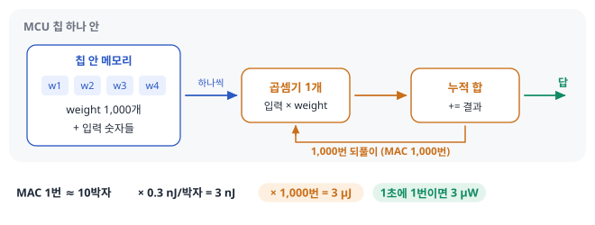
에너지를 한 줄씩.
- MAC 1번에 약 10박자가 든다고 둡니다(메모리에서 꺼내기·곱하기·더하기). 가정
- 박자 하나는 0.3 nJ(앞의 MSP430 데이터시트 계산)이므로, MAC 1번 ≈ 3 nJ.
- MAC 1,000번이면 판정 한 번(inference: 학습이 끝난 망에 새 입력을 넣어 답을 내는 일)에 3 µJ.
- 1초에 한 번 판정하면 평균 3 µW. 그 사이 잠든 동안의 1.2 µW를 더하면 약 4 µW. 계산
- 걸리는 시간은 1만 박자 ÷ 8 MHz = 1.25 ms라, 1초 가운데 0.13%만 깨어 있습니다. 계산
★ 이 값(약 4 µW)은 앞의 설계 C(센서 곁 전처리, 약 3 µW)와 같은 자릿수입니다. 그래서 "뉴로모픽 device는 µW로 동작한다"는 말만으로는 이긴다고 할 수 없고, 같은 과제·같은 조건에서 이 숫자와 나란히 놓아야 뜻이 생깁니다. 해석 두 숫자 모두 가정값으로 만든 교육용 계산이지 실측 비교가 아닙니다 계산. 공정하게 비교하려면 측정 경계(어느 부품까지 넣었나), 하는 일, 판정 빈도, 정확도 요구가 같아야 합니다. 아래 비교 도구에서 가정을 바꾸면 MCU 쪽이 더 작아지는 경우도 직접 볼 수 있습니다.
직접 바꿔 보기: 네 설계의 평균 전력. 앞의 세 설계(A·B·C)에 방금 센 MCU + 작은 신경망(D)을 더해, 같은 규칙(1초 횟수 × 한 번의 에너지 + 대기 전력)으로 셉니다. 손잡이를 하나씩 바꾸고, 어느 부품이 합계를 정하는지 보세요.
교육용 모형입니다. 특정 센서 노드를 잰 값이 아니며, 숫자는 데이터시트·실측으로 자릿수만 맞춘 가정값입니다. 단위: µW(마이크로와트), bit/s.
모형의 가정과 입력 범위
- 평균 전력 = 부품마다 (1초 횟수 × 한 번의 에너지)의 합 + 대기 전력. ADC 1 nJ/변환(bit 수와 무관하다고 둠), MCU 20 nJ/샘플, 사건 하나 16 bit, MCU가 잠든 동안 1.2 µW(B·C·D에 더함).
- 무선은 payload bit 수에 비례한다고 둡니다(16·50·400 nJ/bit). 패킷 머리말·재전송·수신 대기 같은 고정 비용은 따로 넣지 않았습니다.
- C의 '늘 켜진 전처리'(device + 읽기 회로)와 D의 '판정 한 번'은 아직 잰 값이 없는 가정입니다.
- 네 설계가 같은 일을 같은 정확도로 한다고 둡니다. 실제로는 정확도·지연이 다를 수 있고, 그러면 이 비교는 공정하지 않습니다. 센서·증폭기 전력은 네 설계에서 같다고 보고 뺐습니다.
정적 예제. 조작 화면이 뜨지 않을 때 기본 가정(1,000 S/s, 12 bit, 사건 2번/s, 무선 50 nJ/bit, 전처리 1 µW, 판정 3 µJ)의 결과입니다.
| 설계 | 보내는 데이터 | 평균 전력 |
|---|---|---|
| A Raw signal 전부 송신 | 12,000 bit/s | 621 µW (무선 97%) |
| B MCU가 매 샘플 처리 | 32 bit/s | 약 24 µW (MCU 84%) |
| C Near-sensor device | 32 bit/s | 약 3.8 µW (무선·잠듦·전처리) |
| D MCU + 작은 신경망 | 32 bit/s | 약 6.8 µW (신경망 44%) |
전처리를 10 µW로 잡으면 C는 약 12.8 µW가 되어 D(약 6.8 µW)보다 커집니다.
무슨 일이 있었나. 어느 설계가 작은지는 가정이 정합니다. 무선 bit당 에너지가 크면 A가 크게 불리하고, 늘 켜진 전처리가 몇 µW를 넘으면 MCU + 작은 신경망(D)이 C보다 작아집니다. 그래서 내 device로 먼저 잴 숫자는 늘 켜진 상태의 전력입니다.
Weight는 어디에 있나. Weight 1,000개를 하나에 1 byte(8 bit)로 저장하면 1,000 byte = 1 kB입니다. 이 MCU는 칩 안에 64 KB 메모리(FRAM: 전원이 꺼져도 값이 남는 메모리)와 2 KB 작업용 메모리(SRAM)를 갖고 있어서 확인 TI MSP430FR5969 제품 페이지, weight 1 kB가 칩 안에 넉넉히 들어갑니다.
이것이 왜 중요한가.
- 데이터센터의 큰 신경망은 weight가 GB급이라 칩 밖 메모리(DRAM)에 두고, 계산할 때마다 가져와야 합니다. 이 먼 이동이 계산보다 비쌀 수 있습니다(memory wall).
- 뉴로모픽이 "데이터 이동을 줄인다"고 할 때는 이 먼 이동(칩 밖 메모리와 계산기 사이)을 가리키는 경우가 많습니다. 칩 안에서 메모리와 계산을 합치는 설계처럼 칩 안의 짧은 이동을 줄이는 연구도 있습니다. 해석
- ★ 그런데 작은 신경망을 돌리는 MCU에는 이 먼 이동이 처음부터 없습니다. 남는 것은 칩 안 메모리와 곱셈기 사이의 짧은 이동뿐이고, 그 비용은 이미 '박자당 0.3 nJ'에 들어 있습니다.
- 그러니 엣지에서 뉴로모픽 device가 "이동을 줄여 이긴다"고 하려면, 이 짧고 싼 이동보다 더 아낀다는 것을 보여야 합니다. 해석
무엇을 볼지. 그림 18은 같은 자리에 들어갈 두 후보를 일곱 항목으로 나란히 놓은 표입니다. 항목 이름의 색이 '누가 유리한가'입니다(파랑: MCU, 초록: 조건이 맞을 때 뉴로모픽, 회색: 설계에 달림).

항목별로.
- 프로그램 가능성. MCU는 프로그램을 바꾸면 기능이 바뀝니다. Physical reservoir computing은 readout만 다시 학습하면 과제를 바꿀 수 있지만, reservoir의 시간척도와 비선형성은 device에 고정됩니다. 아날로그 회로는 기능을 바꾸려면 회로를 바꿔야 하는 경우가 많습니다(항상은 아닙니다. Device 안에 조절 손잡이를 둔 설계도 있습니다 Liang 2024, p.196).
- 정밀도·재현성. ★ MCU는 디지털이라, 같은 코드에 같은 입력 숫자를 넣으면 계산 결과가 bit 단위로 같게 재현됩니다. 입력을 만드는 센서·ADC의 잡음과 부품 편차는 디지털 쪽에도 남습니다. 아날로그 쪽은 device 편차·noise·ADC 눈금 오차를 모두 안고 갑니다.
- 성숙도. MCU는 컴파일러(프로그램을 기계어로 바꾸는 도구)·라이브러리·공급망이 있습니다. 뉴로모픽은 Roadmap이 "성능 지표가 아직 발전 중이고, 표준화가 어려우며, 평가 기준에 분야의 합의가 없다"고 쓰는 단계입니다. Roadmap 2026, p.8136
- 대기 전력. 설계에 달렸습니다. MCU는 잠들면 µW급입니다(0.4 µA × 3 V ≈ 1.2 µW). 확인 반면 이온 device의 '대기'에는 bias(동작점을 잡으려고 걸어 두는 전압) 유지나 leak 이온 전류(신호가 없어도 조금씩 새어 흐르는 전류)가 있을 수 있습니다. 해석
- 실시간 시계열. MCU는 '최근 1초'처럼 과거 샘플을 메모리에 줄지어 저장해 두고(1,000 S/s면 숫자 1,000개), 새 샘플이 올 때마다 가장 오래된 것을 지우고 새것을 넣은 뒤 다시 꺼내 계산합니다. Device가 이력을 상태(예: 서서히 빠지는 이온 농도)에 담으면 그 저장·꺼내기가 줄어듭니다. 조건은 τ가 신호와 맞는 것입니다. 다만 12 bit 샘플 1,000개는 약 2 kB라 MCU 칩 안에 들어가므로, 줄어드는 것은 칩 안의 짧은 이동이고 그 이득의 크기는 계산해 봐야 합니다. 해석
- 변환 비용. MCU 경로는 ADC가 필수입니다. 아날로그 경로는 다음 부품도 아날로그면 생략할 수 있습니다.
- 생체·수계·연성 환경. 아래 bio-interface 구간에서 봅니다.
공정한 비교의 형식. ★ 같은 과제, 같은 데이터, 같은 정확도 목표에서 시스템 경계를 같게 두고 전력과 지연(latency: 입력이 들어와 답이 나오기까지의 시간)을 재는 것입니다.
Zhong의 비교는 디지털 RC(같은 알고리즘의 디지털 구현)가 기준이라 알고리즘은 같지만, MCU에 최적화된 작은 신경망과 비교한 것은 아닙니다. 그 비교가 없으면 "엣지에 적합"은 아직 가설입니다. Singh 2026은 physical reservoir computing 논문에 "같은 입력 부호화·데이터 분할·readout을 쓴 참조 사례(raw 입력 기준선, 기억을 최소화한 정적 device 기준선)"를 요구하는데 Singh 2026, p.8 Singh 2026, p.20, Table 3, MCU 비교는 그 목록 바깥의 시스템 수준 비교입니다.
"뉴로모픽 device는 GPU보다 10⁶배 효율적이다" — 비교 대상이 맞지 않습니다. 뉴로모픽이 적합한 자리(엣지·실시간·희소)에서 경쟁자는 GPU가 아니라 MCU + 작은 신경망이고, 오늘 대조한 폴더 논문 가운데 그 비교를 완전한 형태로 제시한 것은 없습니다. GPU 비교는 데이터센터 과제에서 뜻이 있고, 그 과제는 오늘 사다리(저전력 엣지 센서용)의 대상이 아닙니다. 데이터센터용 뉴로모픽 하드웨어는 처리량·에너지/연산 같은 다른 기준으로 따로 평가합니다.
내 응용에서 MCU + 작은 신경망으로 같은 일을 하면 어떻게 될지 구체적으로 상상해 보세요. Sampling rate는? 신경망의 weight 수는? 그 MCU가 깨어 있는 시간 비율은? 셋 중 하나라도 숫자로 답할 수 있으면 비교를 시작할 수 있습니다.
생각 정리 보기
심전도 패치로 셋을 채워 보면 이렇습니다.
- Sampling rate. 신호에서 가장 빠른 변화(약 150번/s)에 점이 둘 넘게 찍히도록 → 1,000 S/s.
- Weight 수. 박동 하나(숫자 200개)를 넣어 정상/이상을 고르는 작은 분류기면 수백–수천 개 → 1,000개로 둡니다. 가정
- 깨어 있는 비율. 판정 1번 = MAC 1,000번 × 10박자 = 1만 박자 = 8 MHz에서 1.25 ms. 박동마다(1초에 1번) 판정하면 0.13%.
★ 이 셋으로 평균 전력이 나옵니다: 판정 3 µW + 잠든 1.2 µW ≈ 4 µW. 여기에 매 샘플 ADC(1 µW)와 사건 송신(1.6 µW)을 더하면, 내 device 시스템이 이겨야 할 상대는 약 7 µW입니다. 계산 모르는 항목(예: 내 응용의 정확도 목표)은 모른다고 적어 둡니다.
- 저전력 엣지 센서 자리에서 먼저 비교할 기준선은 GPU가 아니라 센서 옆 MCU다 해석. 과제에 따라 필터·문턱 검출·작은 신경망 중 알맞은 것을 고른다. 근거: Liang 2024, p.202 Kudithipudi 2025, p.802.
- 작은 신경망 = MCU에서 weight 수백–수천 개로 '곱해서 더하기'를 몇 층 하는 프로그램. Weight 1,000개 망을 1초에 한 번 돌리면 약 3 µW + 잠든 1.2 µW [계산, 박자 수는 가정].
- 이 예의 weight 1 kB는 칩 안에 들어가므로 먼 이동(칩 밖 DRAM)이 없다. 뉴로모픽은 칩 안의 짧고 싼 이동보다 더 아껴야 이긴다.
- MCU가 유리: 프로그램 가능성, 정밀도·재현성, 성숙도. 조건부로 뉴로모픽이 유리: 실시간 시계열(τ 정합), 변환 생략(아날로그 다음 부품), 생체·수계 환경.
- 공정한 비교는 같은 과제·데이터·정확도 목표·시스템 경계에서 전력과 지연을 재는 것이다. 폴더에 완전한 예는 없다.
학습 구간 4. Bio-interface, 그리고 부적합한 문제
상황. 내 소재가 물을 머금은 이온 고분자라면 몸에 붙이거나 이식하는 응용을 떠올리기 쉽습니다. "이온 device는 생체와 같은 언어를 쓴다"는 말만으로 보통의 전자 칩(CMOS)보다 낫다고 쓸 수 있을까요?
왜 지금? 앞 세 구간의 조건은 "전자 device로도 할 수 있는 일을 더 싸게"였습니다. 생체 인터페이스는 전자 device가 어려운 환경이라 따로 봐야 합니다.
어디에 쓰이나? 내 연구 동기에 bio-interface를 쓸 때 붙여야 할 조건과, 부적합한 문제를 가려내는 데 씁니다.
끝나면 할 수 있는 것. Bio-interface가 따로 다뤄지는 이유와, 그 이점에 붙는 두 조건(안정성, 변환 효율)을 말한다. 부적합한 문제를 최소 두 가지 든다.
4-1. 왜 bio-interface는 따로 다루나
직관. 지금까지의 조건은 "전자 device로도 할 수 있는 일을 더 싸게"였습니다. Bio-interface(생체 조직과 직접 신호를 주고받는 장치)는 다릅니다. 아래에서 CMOS는 보통의 반도체 칩을 만드는 회로 방식, 즉 '전자 device' 쪽을 가리킵니다.
- 생체 조직은 이온으로 신호를 보내고(약 100 mV의 전압 스파이크, ms–s Aluru 2026, p.592), 물과 염 속에 있으며, 연하고 움직입니다.
- 전자 device는 이 환경에서 변환(이온 신호 ↔︎ 전자 신호)과 encapsulation(봉지: 물·염이 회로에 닿지 않게 감싸는 보호층)이 필요하고, 딱딱합니다.
- ★ 이온 device는 생체와 같은 언어(이온)를 쓰므로 변환이 줄고, 물속에서 동작하며, 하이드로겔·엘라스토머로 만들 수 있습니다.
이것이 Aluru가 이온 컴퓨팅은 "적어도 처음에는 CMOS와 경쟁하지 말고", 생의학 응용(예: 뇌–컴퓨터 인터페이스)·환경 모니터링·농식품처럼 극한의 에너지 효율과 biocompatibility(생체 적합성)가 필요한 응용에 집중하라고 제안한 이유입니다. Aluru 2026, 요약면 그 리뷰의 제안이지, 합의된 사실은 아닙니다.
무엇을 볼지. 그림 19는 생체 인터페이스가 요구하는 다섯 가지(왼쪽 열)에 대해 생체 쪽의 조건, 이온 device가 주는 것, 전자 device의 자리를 한 줄씩 놓았습니다. 줄마다 '이온 device 칸이 쉬워지는가, 조건이 붙는가'를 보세요.

폴더의 예: Pei 2026(Nat. Mater.).
- 무엇을 만들었나. PAA/PEI self-healing(자가치유) 하이드로겔과 레이저 유도 그래핀 전극으로 만든 3단자 이온 reservoir를, neural prosthesis(신경 보철: 잃은 감각·운동 기능을 대신하는 인공 장치)용으로 시연했습니다.
- 초록의 주장. 하이드로겔–전극 계면의 비선형 동역학이 시계열을 전처리하는 물리 reservoir가 되고, 음성 인식 95%를 달성하며, 절단 뒤 다시 붙이면 0.02 s 안에 기능이 회복되고, pH에 민감한 동역학으로 쥐 모델에서 closed-loop(출력이 다시 입력에 영향을 주는) 신경 자극 제어를 했다. Pei 2026, p.1199
- ★ Bio-interface 조건을 쓰는 방식. 자가치유(기계적 환경), pH 의존(화학 환경을 입력으로 씀), 시계열 전처리(τ 정합).
- 주의. 절단된 상태에서 원래 readout weight를 그대로 쓰면, 음성 명령 네 가지의 인식 정확도가 25%(넷 중 하나를 찍는 우연 수준)로 떨어집니다. 확인 "계면에 국한되어 손상에 둔감하다"는 주장은, 벌크(device 내부 전체)가 동작을 정하는 대조 device와 실험으로 비교되지 않은 것으로 보입니다. 미확인
원문 그림을 읽기 전에. 아래는 Pei 2026의 Fig. 5에서 패널 b만 자른 것입니다. 왼쪽 사진은 쥐 다리 근육 곁에 이식한 하이드로겔 이온 reservoir(HIRE)와 세 가닥 전극(GND, VOUT, VIN), 아래 상자는 신호의 흐름(명령 입력 → device → 회로 기판 PCB → 신경 자극), 오른쪽 세 사진은 그 결과 다리가 움직인 각도입니다.

적용 조건. 이온 device의 "같은 언어" 이점에는 두 조건이 붙습니다.
(1) 안정성. Wang 2025(Chem. Soc. Rev.)는 이온 지능 시스템이 생체 상호작용·생체 적합성·물속 동작을 갖지만 "다기능성·계산 능력·동작 안정성이 기존 전자 시스템에 뒤처진다"고 쓰고, 이온과 전자 시스템의 통합을 유망한 경로로 듭니다. Wang 2025, p.329 ★ Zhu 2025도 이온과 전자의 선택은 "우열이 아니라 응용과의 전략적 정합"이며, 전자가 처리의 뼈대를 맡고 soft iontronics가 조직 쪽을 맡는 분업을 말합니다. Zhu 2025, p.14 바로 위 Pei 그림의 PCB가 그 분업의 예입니다.
(2) 변환 효율. 결국 어딘가에서 이온 신호는 전자 신호로 바뀝니다. 그 자리는 전극과 전해질(또는 하이드로겔)이 맞닿은 계면입니다.
- 계면에서는 electrical double layer(전기 이중층: 전극 표면에 반대 부호 이온이 얇게 모인 층)가 충·방전되거나(capacitive), 전자가 계면을 건너 산화·환원 반응을 일으켜(faradaic) 이온의 흐름이 전극 속 전자의 흐름으로 이어집니다.
- 이 계면은 저항과 capacitor를 함께 가진 것처럼 행동해(둘을 묶어 교류 신호에 대한 '저항'으로 적은 값이 impedance) 신호를 작게, 늦게 만들 수 있습니다. 해석
- Roadmap은 이 변환의 지연·에너지·왜곡을 이온(µs–s)과 전자(ns)의 시간척도 불일치 문제로 적습니다. Roadmap 2026, p.8126 시간척도가 다르면 빠른 전자 회로가 느린 이온 신호를 기다리며 켜져 있거나(대기 전력), 신호를 모아 둘 저장 칸이 필요해집니다. 해석
★ 그래서 "같은 언어"가 곧 "더 낫다"는 아니며, 이온–전자 변환이 어디서 몇 번 일어나느냐가 시스템 비용을 정합니다.
4-2. 부적합한 문제
사다리를 거꾸로 읽으면 부적합한 문제가 나옵니다. 무엇을 볼지. 그림 20은 여덟 가지 문제 유형을 상자로 놓고, 오른쪽 아래에 판정(초록: 적합 후보, 빨강: 부적합, 주황: 조건부)을 적었습니다.

아래 '부적합'은 오늘 사다리(저전력 이온 device + 엣지 센서) 기준입니다. 이 분야 전체가 틀렸다는 뜻이 아니고, 다른 기준으로 연구되는 뉴로모픽 하드웨어도 있습니다.
- Batch로 돌릴 수 있는 큰 계산(데이터센터의 학습과 inference): batch로 weight를 재사용해 이동 비용을 나누고, 정밀도 요구가 높으며, GPU가 이미 최적화되어 있습니다. Roadmap이 "속도만 높이는 데 집중하면 지속 학습 같은 생물학적 이점을 놓친다"고 쓴 것 Roadmap 2026, p.8137은, 이 자리에서 뉴로모픽이 GPU와 같은 게임을 하면 진다는 뜻으로 읽을 수 있습니다. 해석
- 정확한 산술(회계, 암호, 정밀 시뮬레이션): '조금 틀려도 답이 같은가'라는 질문에서 떨어집니다.
- 자주 바뀌는 기능(범용 소프트웨어): 프로그램 가능성에서 MCU에 집니다.
- 희소하지 않은 고정밀 입력(영상 전체를 매 프레임 처리): 사건 때만 일하는 이득이 없고 정밀도 요구가 높아 조건부입니다. Roadmap의 엣지 비전 칩 예(Tianmouc)는 두 경로(정밀 인지와 빠른 반응)를 나눠 데이터 양을 90% 줄였다고 하는데 Roadmap 2026, p.8136, 이것은 "희소하게 만드는 설계"로 조건을 바꾼 예입니다.
심화 · 오늘의 반론
가장 강한 반론: "조건을 다 통과하는 응용은 너무 좁다. 심전도·제스처·보철 몇 개를 위해 새 device 플랫폼을 만드는 것은 수지가 안 맞는다. MCU + 작은 신경망이 그 자리도 충분히 싸게 해낸다."
이 반론에 답하려면 MCU와의 비교를 실제로 해야 하고, 폴더에는 그 비교가 없습니다. 응답의 한 방향은 Aluru와 Zhu·Wang이 말하는 bio-interface(전자가 못 가는 자리)이고, 다른 방향은 "device 하나가 아니라 센서·전처리·저장을 겸하는 통합"입니다(Kim 2026 초록의 방향). 어느 방향이 내 소재에 맞는지는 bio-interface를 다시 다루는 날의 질문입니다.
내 소재가 가장 잘 맞는 칸은 바로 위 지도의 어디인가요? "적합 후보" 칸을 골랐다면, 그 칸에서 MCU + 작은 신경망을 이기려고 내 device가 숫자로 보여야 할 것 하나를 적어 보세요. "부적합" 칸만 떠오른다면 그것이 오늘의 가장 중요한 메모입니다.
생각 정리 보기
적합 후보는 세 칸(실시간 시계열, 생체 인터페이스, always-on)입니다. 칸마다 보여야 할 숫자는 이렇습니다. 해석
- Always-on 칸. ★ "Device 앞단(device + 읽기 회로)의 대기 전력 < MCU가 잠든 전력 약 1.2 µW". 이것을 보이면 심전도 예의 설계 C처럼 ADC·MCU 깨움을 1초 1,000번에서 사건 수(예: 2번)로 줄인 이득이 그대로 남습니다.
- 실시간 시계열 칸. "Device의 τ가 신호의 빠르기와 맞는다"(예: 박동 간격 1 s에 τ 0.5 s)와 "같은 과제 정확도가 MCU + 작은 신경망과 비슷하다"(예: 둘 다 95% 이상) 두 숫자가 함께 필요합니다.
- 생체 인터페이스 칸. "체액 속에서 며칠 동안 성능이 유지된다"(예: 7일 뒤 응답 변화 10% 이내)와 "계면 변환에서 신호가 얼마나 줄어드나".
"부적합" 칸만 떠오른다면, 그 칸이 왜 부적합인지(사다리의 어느 질문에서 떨어지는지)를 적어 두는 것이 오늘의 가장 중요한 메모입니다.
- Bio-interface는 "전자 device로도 할 수 있는 일을 싸게"가 아니라 "전자 device가 어려운 환경"이라 따로 다룬다. Aluru의 제안 Aluru 2026, 요약면, Pei 2026의 예(자가치유, pH 입력, 0.02 s 회복) Pei 2026, p.1199.
- 조건: 안정성(이온 시스템은 다기능성·계산 능력·안정성에서 전자에 뒤처짐 Wang 2025, p.329)과 이온–전자 변환 효율 Roadmap 2026, p.8126. 우열이 아니라 분업 Zhu 2025, p.14.
- 부적합: batch 가능한 큰 계산, 정확한 산술, 자주 바뀌는 기능, 희소하지 않은 고정밀 입력 해석.
오늘의 총정리
자료를 덮고 아래 표를 먼저 머릿속으로 채운 뒤 펼쳐 보세요. 그다음 종합 퀴즈를 풉니다.
한 장 요약 펼치기
| 질문 | 한 줄 답 | 근거·조건 |
|---|---|---|
| 적합한 문제의 조건 | 실시간으로 하나씩 → 희소·낮은 대기 전력 → 근사를 견딤 → τ 정합 → 아날로그 다음 부품 → MCU보다 나음 | 사전 테스트에서 "저전력이 필요한 곳"이라고만 썼다면 달라질 지점 해석 |
| 센서 노드 | 센서 → ADC → MCU → 무선. Edge는 송신을, in-sensor는 ADC·MCU의 일을, always-on 설계는 대기 전력을 다룬다 | 세 설계 모형, 가정값은 데이터시트·실측으로 자릿수만 맞춤; Singh 2026, p.1 |
| 평균 전력 세기 | 한 번의 에너지 × 1초당 횟수 + 대기 전력. MCU 20 nJ × 1,000/s = 20 µW, duty cycle 0.83%, 잠든 몫 1.2 µW | 데이터시트 값으로 계산 계산 |
| 이온 device의 자리 | 센서 뒤·ADC 앞(near-sensor) 또는 센서 자체(in-sensor). ADC·MCU가 사건 때만 일하게 함 | 대가: 늘 켜진 device·읽기 회로의 대기 전력 해석 |
| 오늘의 숫자 | Zhong 2022: 정확도 손실 1.1%, 전력 99.9% 절감(29,400 → 22 µW/제스처) | 기준선은 디지털 RC, 시스템에 MCU 포함, 전력은 저자 추정 Zhong 2022, p.674, 678–679 |
| 디지털 기준선 | 센서 옆 MCU, 예: 작은 신경망(weight 1,000개면 약 3 µW + 잠든 1.2 µW, weight는 칩 안) | Liang 2024, p.202 Kudithipudi 2025, p.802 |
| Bio-interface | 같은 언어(이온·물·연성)라 변환·봉지가 준다. 조건: 안정성, 변환 효율 | Aluru 2026, 요약면 Pei 2026, p.1199 Wang 2025, p.329 Zhu 2025, p.14 |
| 부적합 | Batch 가능한 큰 계산, 정확한 산술, 자주 바뀌는 기능, 희소하지 않은 고정밀 입력 | 해석 |
| 오늘의 반론 | 조건을 다 통과하는 응용은 너무 좁고 MCU가 그 자리도 해낸다 | 내 답에서 응답. MCU 비교는 폴더에 없음 |
| 모르는 것 하나 | 내 응용을 MCU + 작은 신경망으로 할 때의 전력·정확도 | 시스템 에너지를 다루는 날에 계산 |
내 답에 꼭 들어가야 할 것
- "적합한 문제"를 조건의 순서로 적었나? 한 문장("저전력이 필요한 곳")으로 끝나지 않았나?
- 센서 노드의 네 부품을 적고, edge·in-sensor·always-on이 각각 어디를 줄이는지 구별했나? 평균 전력을 '한 번의 에너지 × 횟수 + 대기 전력'으로 셌나?
- 폴더의 수치 하나(예: Zhong 2022)를 들 때 기준선의 종류와 시스템 경계를 함께 적었나?
- 센서 옆 디지털 기준선(예: MCU + 작은 신경망)을 적고, 항목별로 누가 유리한지 조건을 붙였나?
- Bio-interface의 이점에 안정성·변환 효율이라는 조건을 붙였나?
- 부적합한 문제를 최소 두 가지 적었나? 내 소재가 어느 칸에 가까운지 적었나?
장부에 옮길 후보
- 병목 장부: (응용이 요구하는 것) 센서 노드에서 MCU + 작은 신경망의 평균 전력·정확도(수치 미확인) vs (메커니즘이 허용하는 것) 이온 device 전처리의 대기 전력·변환 횟수. 이 비교 자체가 폴더 문헌에는 아직 없음.
- 병목 장부: (응용이 요구하는 것) bio-interface의 장기 안정성(탈수·이온 누출·섬유화) vs (메커니즘이 허용하는 것) 하이드로겔·이온겔의 수계 안정성 Wang 2025, p.329.
- 아직 모르는 것: Zhong 2022의 22 µW에 MCU·전원·측정이 포함됐는지. / 내 응용에 맞는 MCU의 잠든·동작 전력과 깨어 있는 시간 비율. / 내 응용의 사다리 첫 "아니오"가 어디인지. / 내 device 앞단(device + 읽기 회로)의 대기 전력.
- 용어집: edge, cloud, 센서 노드, raw signal, 증폭기, ADC의 한 눈금, 샘플, sampling rate, bit, 박자당 에너지, duty cycle, 대기 전력, MCU, 작은 신경망, MAC, inference, TinyML, in-sensor computing, near-sensor, always-on, 시스템 경계, 지연, 기준선의 종류(디지털 RC / raw 입력 / 정적 device / MCU + 신경망), bio-interface, closed-loop, 이온–전자 변환.
- 접는 기준 후보: "내 응용에서 MCU + 작은 신경망의 추정 전력보다 시스템 전체 전력이 낮다는 계산(가정 포함)을 제시하지 못하면 '엣지 적합'을 연구 동기로 쓰지 않는다."
더 읽을거리
서지와 읽음·대조 상태는 참고문헌 페이지에 있습니다. 쪽수는 인쇄 쪽수입니다.
내가 읽은 논문 (다시 볼 곳)
- Liang 2024, Nat. Electron. 7, 193–206. p.196(temporal kernel), p.198(τ와 시간척도), p.201–202(장점은 정확도가 아님; 디지털 RC보다 자원을 더 쓰면 무의미).
폴더에 있지만 아직 읽지 않은 논문 (Claude가 대조함)
- Zhong 2022, Nat. Electron. 5, 672–681 (Readable papers3). p.672(엣지 용도), p.674(시스템 구성에 MCU), p.677(96.6 vs 98.2%), p.678 Fig. 5g, p.679(전력 추정과 두 요인).
- Pei 2026, Nat. Mater. 25, 1199–1208 (폴더 루트). p.1199 초록. 노트(notes/Pei_2026_NatMater.md)에 본문 정리가 있음.
- Kim 2026, Nat. Sensors 1, 535–544 (Readable papers3). p.535 초록, p.536–538(자극이 에너지원).
- Singh 2026, Adv. Mater. e74897 (Readable papers3, "Descriptors to Dynamics"). p.1(엣지 사슬), p.8(같은 조건의 참조 사례), p.20 Table 3(귀속 대조·에너지 경계).
- Roadmap 2026, ACS Nano 20, 8102–8163. p.8103(µW 엣지 센서–데이터센터), p.8126(시간척도 불일치), p.8130(peripheral circuit 최대 70%), p.8136(엣지 BIC 예, 벤치마크 합의 없음), p.8137(속도만 높이면 놓치는 것).
- Aluru 2026, Science 392, 592–601. 요약면(CMOS와 경쟁하지 말라는 제안).
- Wang 2025, Chem. Soc. Rev. 55, 299–335 (읽음). p.329 Outlook (6) 이온–전자 통합.
- Zhu 2025, Adv. Mater. Technol. 11, e01963. p.14 3.6절(전략적 정합).
폴더 밖 (서지를 직접 확인한 뒤 쓰세요)
- MCU 전력 수치와 무선 송신의 bit당 에너지는 폴더에 없습니다. 오늘 쓴 값은 Claude가 아래에서 확인했습니다: TI MSP430FR5969 데이터시트(SLAS704G)(동작 약 100 µA/MHz, 대기 0.4 µA, ADC 145 µA·변환 14박자), Nordic nRF52832 제품 안내서 v2.4(송신 0 dBm 5.3 mA, 1 Mbps), Siekkinen et al. 2012(무선 실측), Warden & Situnayake 2020 TinyML(서지만). MLPerf Tiny 같은 벤치마크와 심전도 신호 크기·대역의 원전은 확인하지 않았습니다 미확인.
학습 완료
이 학습 단위를 마쳤으면 눌러 주세요. 쓰기·영상·심화·추가 연습은 필요 없고, 퀴즈 점수와도 따로 기록됩니다. '완료'는 이 단위를 끝냈다는 표시이지 모든 내용을 완벽히 익혔다는 뜻이 아닙니다.
선택 활동: 글로 정리하기
선택 활동 펼치기 · 백지 회상, 가르치듯 내 답, 사전 테스트 다시 풀기 (학습 완료와 무관)
가르치듯 내 답. 후배에게 설명한다고 생각하고 짧게(3–5문장 또는 작은 도식 하나) 답합니다.
사전 테스트 다시 풀기. 같은 문제를 이유와 함께 다시 풉니다(정답을 이미 본 문제라 이해 점검 점수로 쓰지 않습니다).